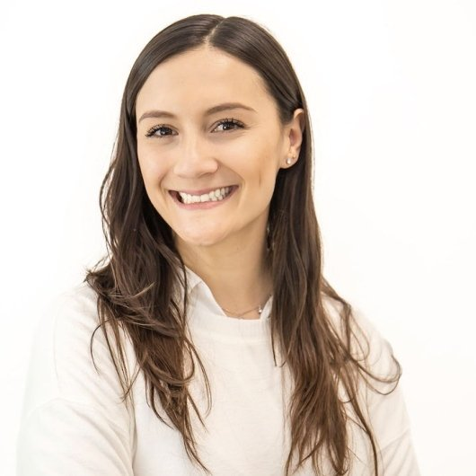
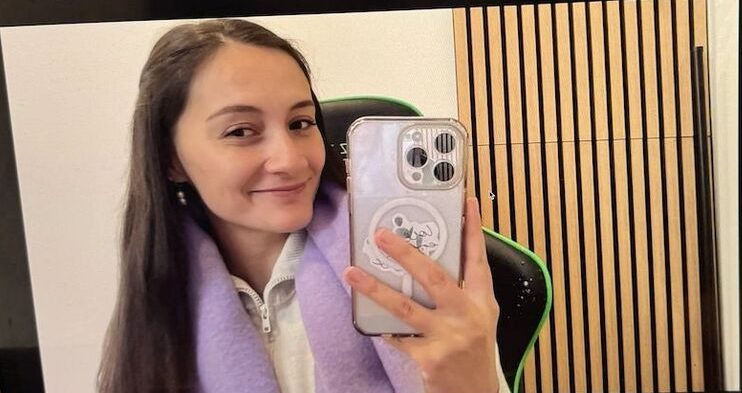

Ansiedad y estrés
Para cuando la mente no para, el cuerpo está en alerta y no sabes bien por qué.
Leer másPuede ser ansiedad. A veces se siente como inquietud, desconexión o sobrepensar. Soy Georgia, psicóloga y también migrante, y te acompaño a entender qué hay detrás de lo que sientes para que vuelvas a estar en calma.

Y no tienes que seguir pasándolo sola. Hay una forma de entenderlo y de empezar a sentirte mejor.

Aquí va un testimonio real de una paciente, con su permiso. Lo ideal es que cuente cómo llegó y qué cambió después de algunas sesiones.
País donde vive Pendiente
Para cuando la mente no para, el cuerpo está en alerta y no sabes bien por qué.
Leer másExtrañar, sentirte entre dos lugares o tener que empezar de nuevo.
Leer másRupturas, pérdidas, un trabajo nuevo o la sensación de estar estancada.
Leer másCuéntame en pocas líneas qué te está pasando y desde qué país me escribes. Te respondo con horarios que funcionen en tu zona horaria.
WhatsApp +34 652 20 28 28